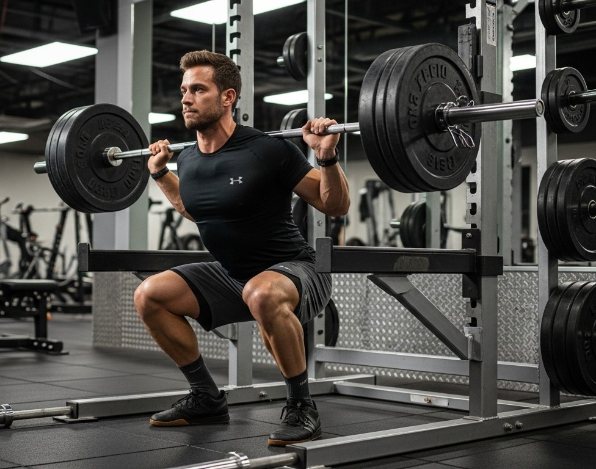
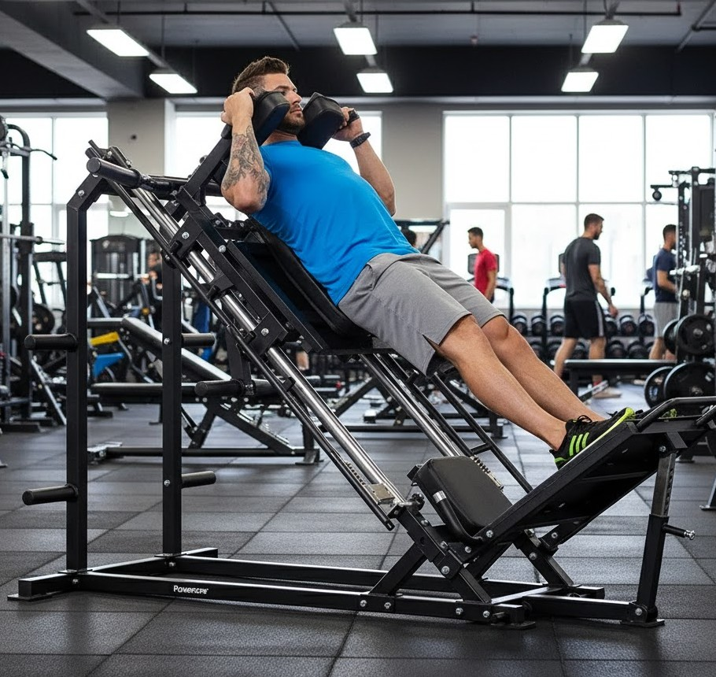
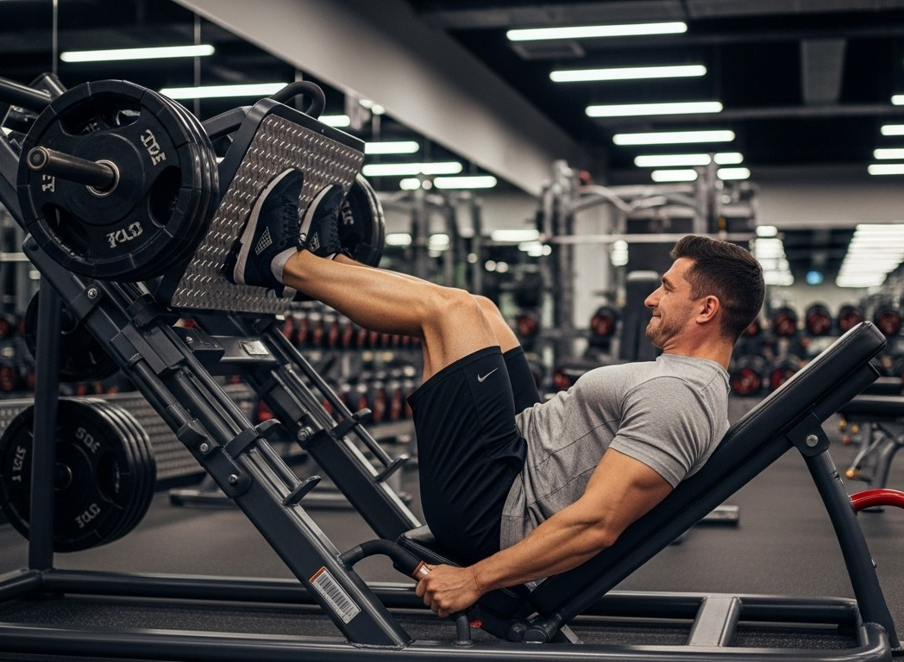
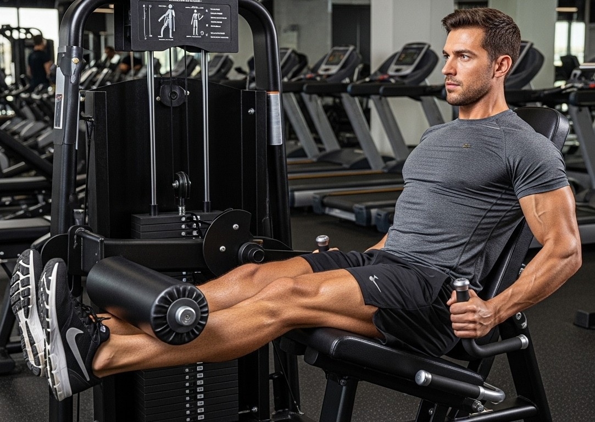

Sentadilla Libre
El mejor ejercicio compuesto para tus piernas.
Aqui podras encontrar como debes hacer este ejercicio.
Sentadilla en Smith

El balance entre tecnica y fuerza.
Aqui podras encontrar como debes hacer este ejercicio.
Hack Squat
Nunca vas a sentir arder tus piernas como con este ejercicio.
Aqui podras encontrar como debes hacer este ejercicio.
Prensa de Piernas
De los mejores ejercicios para acabar con tus cuadriceps
Aqui podras encontrar como debes hacer este ejercicio.
Extension de Cuadriceps
Infaltable, unico y necesario para marcar tus cuadriceps.
Aqui podras encontrar como debes hacer este ejercicio.